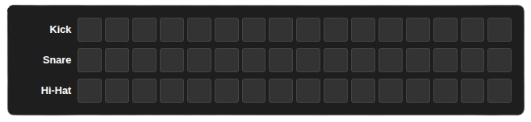

Simple Sequence Cycle é uma DAW (interface de audio digital) que feita para rodar no seu browser, sem login, sem conta. Apenas música, sem restrições pronto para a sua criatividade.


Um sequênciador simples e moderno, criado para facilitar a criação das suas beats